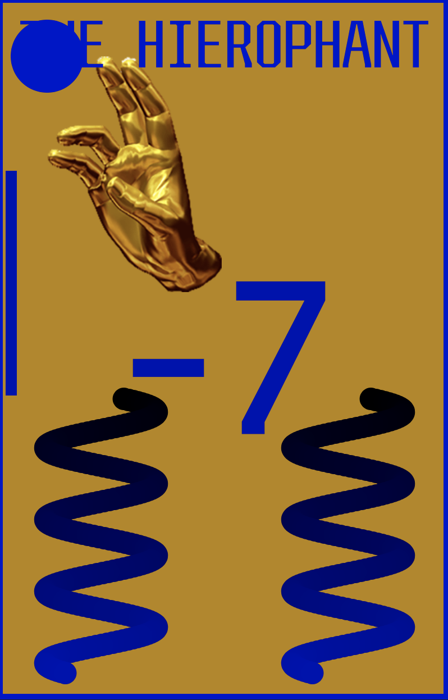
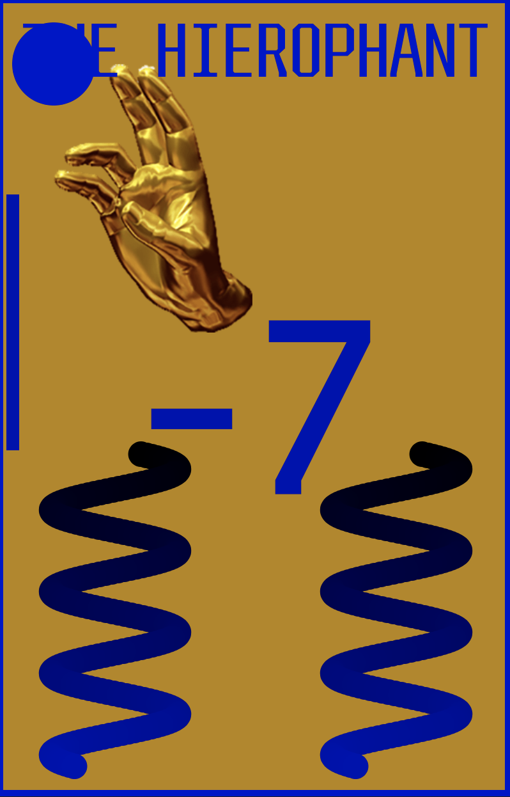
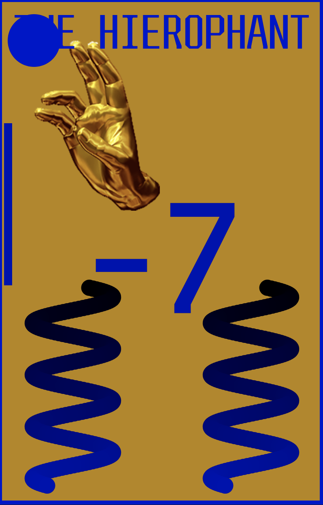

Depending on your own nature, the Hierophant can mean very different things. At its root, it represents doctrine, but doctrine can come in the form of teaching and guidance or rigid authority. Where it appears in your spread is also important, as it is most often indicative of your own approach to the moral, religious, and social conventions of the world. Considered wisely, it helps show the path towards fulfillment.

Description from trustedtarot.com